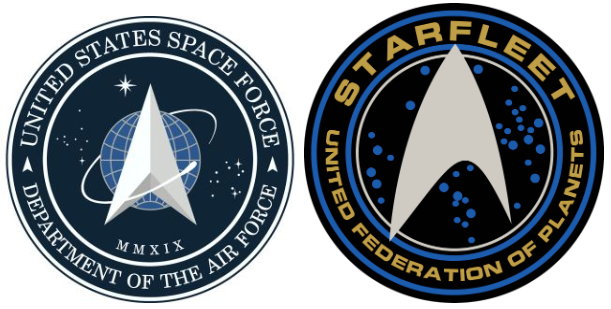

The newly unveiled logo for US Space Force appears to have boldly gone where Star Trek went before.
Left: the new Space Force logo. Right: Starfleet logo from Star Trek.
Twitter users noted that the emblem, revealed by President Donald Trump, bears an uncanny likeness to the insignia from the cult sci-fi TV series.
The striking resemblance left many critics as stunned as though they had been zapped by Captain Kirk's phaser.
But others online insisted the logo was really based on the US Air Force One.
The intergalactic controversy comes after mockery erupted last week when it emerged Space Force troops would wear woodland camouflage uniforms.
Unveiling the insignia on Friday, Mr Trump tweeted: "After consultation with our Great Military Leaders, designers, and others, I am pleased to present the new logo for the United States Space Force, the Sixth Branch of our Magnificent Military!"
George Takei, star of the original 1960s Star Trek TV series, tweeted archly in response.
Ahem. We are expecting some royalties from this... https://t.co/msYcJMlqjh
— George Takei (@GeorgeTakei) January 24, 2020
Another Twitter user joked that the Space Force had copied Star Trek's "homework".
So apparently Space Force is boldly going where a few men (and Lt. Uhura) have gone before? pic.twitter.com/vOQJusyEeZ
— Peter Botte (@PeterBotte) January 24, 2020
But others pointed out that the new logo seemed to bear equal likeness to another, suborbital branch of the US military.
For those excitedly tweeting that Trump stole the Star Trek logo!!!!, the patch on the left was the existing Air Force Command logo.
— John Noonan (@noonanjo) January 24, 2020
The same one I wore as a Lieutenant in 2005. pic.twitter.com/mYb60YioBP